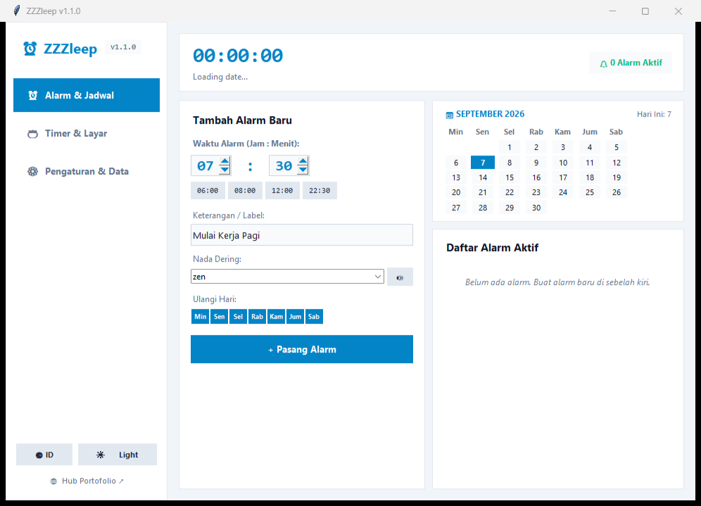

Aplikasi Desktop (Python & Tkinter GUI)
ZZZleep Desktop Application
Aplikasi manajemen waktu untuk laptop dan komputer: alarm audio sintetis (winsound), timer Pomodoro 25/5, pengingat istirahat mata 20-20-20, dan penyimpanan data lokal JSON.

Spesifikasi & Fitur Teknis
-
•
Audio Sintetis: Modul
winsound.Beeppada background thread tanpa berkas audio eksternal. - • Pengingat Layar 20-20-20: Interval timer 20 menit untuk jeda 20 detik melihat objek sejauh 6 meter guna mencegah ketegangan mata.
- • Timer Pomodoro (25/5): Siklus fokus kerja dan jeda istirahat dengan notifikasi suara.
-
•
Auto-Update GitHub: Sinkronisasi manifest
version.jsonotomatis dengan dialog pop-up changelog. -
•
Penyimpanan Lokal: Berkas tersimpan di
~/.zzzleep_desktop_data.json.
Cara Menjalankan & Kompilasi
# Opsi 1: Unduh binary siap jalan langsung:
# Opsi 2: Jalankan dari source code Python:
git clone https://github.com/InfiniteNull/ZZZleep.git
cd ZZZleep
python desktop/app.py
# Opsi 3: Kompilasi mandiri via PyInstaller:
pip install -r requirements.txt
python desktop/build_exe.py